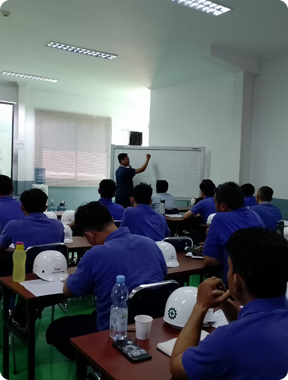
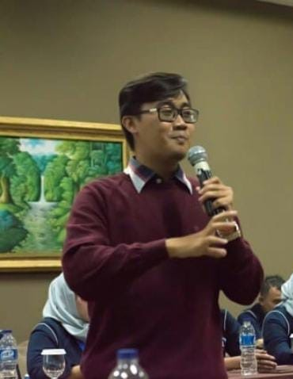

AK Learning Development merupakan industri yang bergerak dalam jasa pelatihan dan pengembangan sumber daya manusia. Dengan layanan pelatihan di bidang Leadership, Human Resources, dan Communication, kami menghadirkan program yang praktis, interaktif, untuk membantu menciptakan perubahan positif dalam organisasi.
ProgramsTahun
Pengalaman
Program
Terselesaikan


Membangun Sumber Daya Manusia Juara di Indonesia
Menciptakan sistem pembelajaran yang praktis, fun, interaktif pada bidang Leadership, Human Resources, Communication.
Mengembangkan individu dan tim organisasi melalui pengumpulan informasi permasalahan, tantangan organisasi, dan peluang perbaikan berkelanjutan.
Menjadi fasilitator pelatihan dan pengembangan sumber daya manusia yang terjangkau oleh seluruh kalangan.
Memberikan kontribusi terhadap peningkatan dunia pendidikan dan masyarakat.